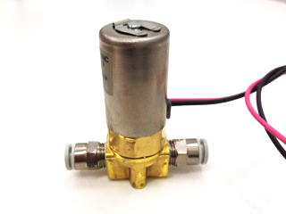

-
about
ウェブサイトを一つ開くと、閲覧者はあまり意識していないところでウェブブラウザはさまざまな処理をしてそのページを構成します。たとえばそのウェブサイトが外部リソースを多用していれば通信がその分発生しますし、クッキーを保持するように指定されることもあります。またサイト側の指定ではありませんが、サイトの構成によってガベージコレクションや再描画などの処理を行います。こういった処理を視覚化すればウェブページが構成されますが、ここでは視覚以外での構成を試みます。
weburette は、ウェブブラウザの処理内容に応じたお酒を１滴ずつ落とし、それが混じりあうことでカクテルができあがります。ウェブページによって、その処理内容が異なるためにお酒の混合比も変化するので、そのウェブページならではの味と香りを持ち合わせた独特のカクテルになります。つまり、ウェブページを見るだけでなく、香りと味で楽しむこともできるようになるのです。このような感覚の変換は、もしかするとウェブページに新しい価値を見いだす方法の一つなのかもしれません。
-
implementation
前述通り、ウェブサイトを開くとウェブブラウザはさまざまな処理を行います。Firefox には、Observer Notificationsという、こうした処理が発生させるイベントを拾うサービスが備わっています。weburette では、これらのイベントを通信関係やクッキー関係などにカテゴライズし、それぞれに応じた Arduino のピンに電気信号を送ります。
お酒の入ったボトルにはチューブが差し込まれ、その先にソレノイドバルブが備わっています。ソレノイドバルブは、Arduino の信号を受け取って弁を開閉します。お酒はその開放時に自重によって落ち流れ、グラスに注がれます。
ソレノイドバルブ
筐体を下側から撮影 -
source codes
-
membersspecial thanks!